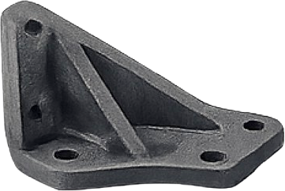

PLA 3D printing: prototypes, models and objects
The most widely used filament in the world: accurate, economical and available in a huge choice of colours. The right starting point for almost any project.

PLA at a glance
What is PLA?
PLA (polylactic acid) is a thermoplastic made from plant resources such as corn starch. It melts at low temperature, shrinks very little and prints with great accuracy: it is the simplest and most economical material in FDM 3D printing.
It is stiff and gives parts with crisp details and clean surfaces. However, it is sensitive to heat (it softens at around 55–60 °C), UV and chemicals: it is not made for exposed technical parts.
At O&D Impression 3D, PLA is the material for visual prototypes, models, promotional items, indoor signage and small decorative series. Thanks to our multi-nozzle Bambu Lab H2C printers, it can also be printed in several colours on the same part.
Strengths & limits
- High detail accuracy
- Very wide palette, multicolour printing
- Fast printing, controlled cost
- Made from plant resources
- Very little warping when printing
- Softens from about 55–60 °C
- Not recommended outdoors (UV)
- Low resistance to solvents and chemicals
- Brittle under impact, poorly suited to mechanical parts
PLA applications
Prototyping
Visual prototypes, form-validation models, ergonomic tests.
Architecture
Architectural and urban planning models.
Marketing & events
Promotional items, keyrings, displays, raised logos.
Decoration & signage
Letters, indoor signs, decorative objects, figurines.
Education
Teaching models and course materials.
Technical data
| Family | Polylactic acid (PLA) |
|---|---|
| Softening temperature | ≈ 55–60 °C |
| Density | ≈ 1.24 g/cm³ |
| Origin | Plant-based (starch) |
Indicative values (manufacturer data or typical values for the material family). * To be validated for the final application. Full datasheets on request.
Designing your part in PLA
- Avoid thin parts subject to bending: PLA breaks rather than bends.
- For several colours, separate the colour areas in the 3D file (or let us do it).
- Do not leave the part in a car in the sun or near a heat source.
- Sanding and primer
- Painting
- Direct multicolour printing (up to 24 colours on the H2C)
- Assembly and bonding


PLA: frequently asked questions
Is PLA strong?
It is stiff and strong for lightly loaded objects. For a part subject to impacts, heat or bending, PETG, ABS or ASA are more suitable.
Does PLA withstand outdoor use?
It is not recommended outdoors: UV and heat degrade it. Prefer ASA.
Is PLA biodegradable?
It is made from plant resources and can degrade in industrial composting, but not in nature or in a garden compost.
Can PLA be printed in several colours?
Yes. Our Bambu Lab H2C printers print up to 24 colours on the same part, with no retouching or painting.
Why is PLA cheaper?
The material is economical and prints quickly, with no heated enclosure or complex settings.
Other FDM materials

PETG
Strong · Durable · Chemical-resistant
View the sheet →
ABS
Hard · Machinable · Heat-resistant
View the sheet →
ASA
UV-resistant · Outdoor · Durable
View the sheet →
TPU
Flexible · Elastic · Abrasion-resistant
View the sheet →
PP
Lightweight · Flexible · Chemical-resistant
View the sheet →
PA12-CF
Rigid · Lightweight · Technical
View the sheet →
PA12-GF
Stable · Robust · Industrial
View the sheet →
PPS-CF
High temperature · Chemical-resistant · Rigid
View the sheet →A part to make?
Send your 3D file or describe what you need: instant quote with a file, custom quote within 24 h.